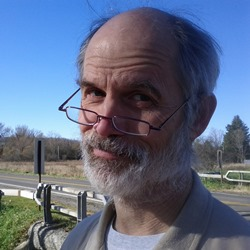

David KoesterDavid Koester is a socio-cultural anthropologist specializing in the peoples of the North and especially peoples and cultures of the North Pacific and North Atlantic. He has been working with Itelmen people in Kamchatka since 1992. His main focus over the years has been Itelmen cultural revitalization, Itelmen music, the legacy of Soviet social policies and life histories of individuals, including the extensive life history of Tatiana Petrovna Lukashkina. He is interested in the study of songs and poetic forms in the Itelmen language and in helping with efforts to preserve the language through both traditional means and current technology. |
 Jonathan David BobaljikJonathan David Bobaljik is a linguist at the University of Connecticut and has been involved in fieldwork documenting Itelmen since 1993. He works primarily in the areas of theoretical morphology and syntax, with a focus on linguistic universals. He is the author of Universals of Comparative Morphology, MIT Press, 2013.Bobaljik Website |
Tom MyersTom Myers studied physics in Bogota and Buenos Aires before receiving his BA from St. John's College of Santa Fe (1975) and a PhD in computer science from the University of Pennsylvania (1980). He worked on parallelism and program transformation in functional and relational languages, with one textbook, then switched to writing software and co-authored books about Javascript and Java/ XML programming with Alexander Nakhimovsky as partner and coauthor. |
 Alexander NakhimovskyAlexander Nakhimovsky received an MA in mathematics from Leningrad University (1972) and a Ph.D in linguistics from Cornell University (1979) with a graduate minor in computer science. He has written several articles on linguistics and, as a coauthor to Tom Myers, books about Javascript and Java/ XML programming. In 2006-2011 he was director of an NSF project on documenting endangered languages of Eurasia. |